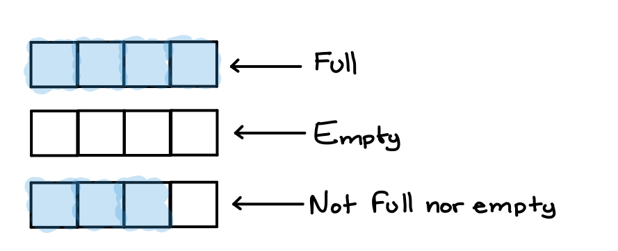

Stack
The stack class allows us to store and manipulate data. A stack has built-in logic and functions.
Stack ← “Last in, first out”, think of it like a stack of dishes.
Terminology:
Push: Push an item on a stack as you would place a dish on top of the dish stack.
Pop: Pop an item off of the top stack as you would take a dish off of the top of the dish stack.
Top: Top item of a stack would be the last dish you placed on the stack.
IsEmpty: Returns true if the stack is empty.
IsFull: Returns true if the stack is full.

The variables
The class variables are simply used to store data or maintain a particular state. The access specifiers of the variable members of the stack class will mostly be private.
The “state” refers to the condition of a stack at a given point. For example, we need to keep track of its “top”; index of last element in which we assigned data. The index will be needed by the Push, Pop, Top, IsEmpty, and IsFull member functions.
Our stack class should have a member variable to represent the index of the “top” element. This index element should be an integer.
Remember that every time we Push(Adding to the stack) or Pop(Removing from the stack), we must update the index in order to keep track of the top.
The member variables of the stack class
| Name |
Data Type |
Description |
top |
int |
Index of top |
data |
char array |
Hold values of stack |
Member functions of the stack class
| Name |
Return Value |
Parameter |
Description |
Push() |
none |
char |
Assigns values to empty elements of array, updates top variable. |
Pop() |
none |
none |
Decrements top variable. When poping, we don't change the value of the element being decremented. |
Top() |
char |
none |
Returns value of top index of array. |
IsEmpty() |
bool |
none |
Returns true if empty, else returns false. |
IsFull() |
bool |
none |
Returns true if full, else returns false. |
Stack constructor
We should define a constructor to simply set a default value, perhaps we shoudl set the member variables to zero. However, the top index value should be initialized to -1; not zero!Creating the class
class CStack{ public:
CStack();
void Push(char);
void Pop();
char Top();
bool IsEmpty();
bool IsFull();
private:
int top;
char data[SIZE];
};
Stack program example
#include <iostream>
#include "CStack.h"
using namespace std;
int main(int argc, char *argv[]) {
CStack cs;
char ans;
int choice;
cout << "Do you wish to see the stack menu " << endl;
cout << "Enter 'y' to continue: ";
cin >> ans;
cin.ignore();
while(ans == 'y'){
cout << endl << "CStack Menu:" << endl;
cout << "(1) Check status of stack" << endl;
cout << "(2) Push into stack" << endl;
cout << "(3) Pop an item from stack" << endl;
cout << "(4) View top element of stack" << endl;
cout << "Enter choice: ";
cin >> choice;
switch (choice) {
case 1:
if(cs.IsEmpty()){
cout << "Stack is empty" << endl;
} else if(cs.IsFull()){
cout << "Stack is full" << endl;
} else {
cout << "Stack is partially filled" << endl;
}
break;
case 2:
cin >> ans;
cout << "Enter character: ";
cin.ignore();
cs.Push(ans);
break;
case 3:
cs.Pop();
break;
case 4:
if(cs.IsEmpty()){
cout << "Stack is empty!!!" << endl;
} else {
cout << "Top: " << cs.Top() << endl;
}
break;
}
cout << endl << "Do you wish to see the stack menu " << endl;
cout << "Enter 'y' to continue: ";
cin >> ans;
cin.ignore();
}
return 0;
}
#ifndef _CStack_h_
#define _CStack_h_
class CStack {
public:
CStack();
virtual ~CStack();
void Push(char);
void Pop();
char Top();
bool IsEmpty();
bool IsFull();
private:
int top;
char data[21];
};
#endif
#include "CStack.h"
#include <iostream>
using namespace std;
bool CStack::IsEmpty(){
return(top == -1);
}
bool CStack::IsFull(){
return(top == 21 - 1);
}
void CStack::Push(char ch){
if(IsFull()){
cout << "Stack is full" << endl;
} else {
top++;
data[top] = ch;
}
}
void CStack::Pop(){
if(IsEmpty()){
cout << "It's NOT a valid expression" << endl;
} else {
top--;
}
}
char CStack::Top(){
return data[top];
}
CStack::CStack() {
top = -1;
for(int i=0; i<21; i++){
data[i] = '\0';
}
}
CStack::~CStack() {
}